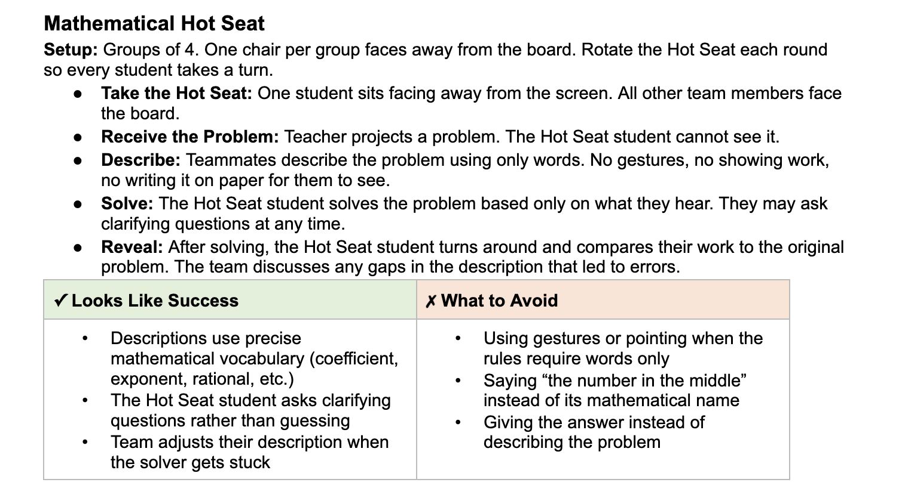

Problem 1
Use the graph to describe what happens to \(f(x)\) as \(x\to 2^-\) and as \(x\to 2^+\).


Use the graph to describe what happens to \(f(x)\) as \(x\to 2^-\) and as \(x\to 2^+\).
As $x\to 2^-$, the graph is on the left branch and moves downward toward very large negative values.
As $x\to 2^+$, the graph is on the right branch and moves upward toward very large positive values.
Complete the statement: If \(\lim_{x\to a^-} f(x)=3\) and \(\lim_{x\to a^+} f(x)=3\), then \(\lim_{x\to a} f(x)=\underline{\hspace{1in}}\).
Since the left-hand and right-hand limits are both $3$, the two-sided limit is $3$.
$\lim_{x\to a} f(x)=3$
Use the graph to determine the left-hand limit, right-hand limit, function value, and whether the two-sided limit exists at \(x=0\).

A student says, “If \(f(a)\) is undefined, then \(\lim_{x\to a} f(x)\) cannot exist.” Explain why this statement is false.
The statement is false because a limit depends on what the function approaches near $x=a$, not necessarily the value at $x=a$.
A graph can have a hole at $x=a$, so $f(a)$ is undefined while $\lim_{x\to a}f(x)$ still exists.
For each quadratic, determine whether the vertex is a maximum or a minimum.
\(y=x^2+6x+2\)
\(y=-2x^2+4x+5\)
\(y=5(x-3)^2-8\)
\(y=-\frac12(x+1)^2+7\)
Use the formula
\(x=-\frac{b}{2a}\)
to find the axis of symmetry for each quadratic.
\(y=x^2-8x+3\)
\(y=2x^2+12x-1\)
\(y=-x^2+10x+4\)
Match each description to the correct range.
A parabola opens up and has vertex \((3,-4)\).
A parabola opens down and has vertex \((-2,7)\).
A parabola opens up and has vertex \((0,5)\).
A parabola opens down and has vertex \((6,-1)\).
Ranges:
\(y\le 7\)
\(y\ge -4\)
\(y\le -1\)
\(y\ge 5\)
Which function has a minimum value of \(-6\)?
\(y=(x+4)^2-6\)
\(y=-(x+4)^2-6\)
\(y=(x-6)^2+4\)
\(y=-6(x+4)^2\)
Choice a: $y=(x+4)^2-6$.
The parabola opens upward and has vertex $(-4,-6)$, so the minimum value is $-6$.
For the function
\(g(x)=-x^2+8x-10\)
find:
the \(y\)-intercept
the axis of symmetry
the vertex
whether the vertex is a maximum or minimum
the range
A quadratic function has zeros \(x=1\) and \(x=9\).
Find the axis of symmetry.
If the graph opens downward, where is the function increasing?
If the graph opens downward, where is the function decreasing?
What kind of value does the vertex represent?
A student says:
“The range of \(y=-3(x-2)^2+5\) is \(y\ge 5\) because the vertex has \(y=5\).”
Explain the mistake and state the correct range.
The mistake is that the parabola opens downward because $a=-3$.
The vertex is $(2,5)$, and it is a maximum.
The correct range is $y\le 5$.
A farmer has \(100\) meters of fencing to enclose a rectangular field along a river. No fencing is needed along the river. Let \(x\) be the width perpendicular to the river.
Write an area function in terms of \(x\).
Find the dimensions that maximize area.
Find the maximum area.
State a reasonable domain for the model.
Explain why the domain is restricted in context.
Evaluate each expression when \(a=-2\).
\(a^2+3\)
\(4a-7\)
\(-2a^2\)
\((a+5)^2\)
If \(g(x)=x^2-5\), evaluate each.
\(g(0)\)
\(g(2)\)
\(g(-2)\)
\(g(5)\)
If \(g(x)=\frac{x+6}{x-2}\), evaluate each.
\(g(3)\)
\(g(8)\)
\(g(0)\)
Explain why \(g(2)\) is undefined.
A student evaluates \(f(x)=x^2+4x\) at \(x=-3\) and writes:
\[f(-3)=-3^2+4(-3)=-9-12=-21.\]
Identify the error and evaluate correctly.
The error is that $(-3)^2$ should be positive. Parentheses matter when substituting a negative input.
$f(-3)=(-3)^2+4(-3)=9-12=-3$.